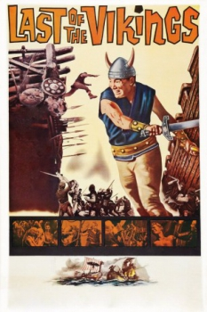

Also known as:L'ultimo dei Vikinghi (original title)
Country:Italy, 103 minutes
Spoken languages:
Genres:Adventure, Action
Director(s):Giacomo Gentilomo
Writer(s):Giacomo Gentilomo, Arpad De Riso, Guido Zurli
Video Codec:Unknown
Number: 1610


Certification:
Storyline:
In this historical drama, a Viking prince returns to his homeland only to learn that his father has been murdered by King Sven of Norway. Sven is forcing his sister to marry in order to create an alliance with the Danes. The prince must defeat Sven and save his sister.
Cast:
Medium: Original DVD,
Comments: Part of: Wrath of the Sword - 20 movie collection
Loaned: No
Aspect ratio: Unknown